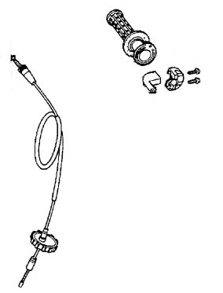
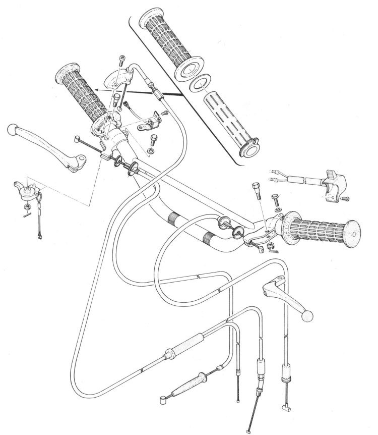

The throttle twist grip is the tube under the right grip and the housing that clamps round it on the bar. The tube has a drum or channel that holds the end of the throttle cable. On many bikes the housing also carries the right-hand switches (engine stop, starter, lights). ATVs and some scooters use a thumb lever instead.
What it does
Turning the grip pulls the cable and opens the throttle. Designs differ: a drum with the cable in a gentle curve, a straight pull with no bend, a twin cable drum (pull and return), a spiral groove that slides a block in the bar, or a small gear set. The less the cable bends at the grip, the longer it lasts.
Signs it is worn or failing
- Grip stiff, gritty or slow to snap back: Throttle sticks. Stop riding until fixed.
- Grip turns before the throttle opens, or rocks on the bar: Handlebar grip is loose.
- Throttle cables keep breaking at the grip: Throttle cable keeps breaking.
When to replace it
Replace a cracked tube, a tube with a worn cable channel, or a housing with stripped screw holes or a broken switch.
What to match when buying
- Make, model and year. Single or twin cable drum. Drum size changes how fast the throttle opens: keep the original unless you know why you are changing it.
- Housing with or without switches, and the right connector.
- Bar diameter and whether the housing has a locating pin for a hole in the bar.
Fitting notes
- Clean and lightly grease the bar under the tube. Grease spiral and gear types; light oil or graphite on cable drums.
- Set the housing so the cable enters in a gentle curve. Check the throttle snaps shut at every bar position.
- See Strip, clean and lubricate a twist grip.